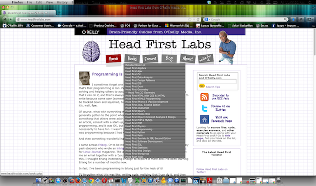

One of the most common questions we get is “How do I download the practice files for this book?” If there are files required for the title in question, in most cases it’s pretty straightforward and the files can be found on the books catalog page. To find this, simply go to oreilly.com and type in the name of the book in the search field. Next, click on either the title or the “Learn More” button to be taken to the catalog page.
-----------------------------------
On the right hand side of the page, underneath the “Buying Options”, you’ll see an “Essential Links” section. The first link there is the one you want, and it’s labeled “Practice Files”, “Companion Content”, or “Example Code”.
Regardless of what it’s called, this link is the one you want. It will usually take you to a page with a download link to grab the .zip file of the files you’ll need. Simply click on the link there to begin the download and follow the directions on the page there (if any) and you should be all set.
The download process typically goes something like this:
1: Click on the following link:
2: Click Save. (Depending on which browser you’re using, it will either be automatically downloaded to your “Downloads” folder or to the desktop). You should have the option to view your download folder when it’s complete.
3: Next, you’ll want to extract the files to a convenient location. Windows usually has a built in unzipping utility, so simply right click on the .zip file and select “Extract All”. If you are on a Mac, it’s even easier and you just need to double click on it to open the “Archive Utility” to begin the extraction process.
You can also find a link to the location to download the practice files from your oreilly.com account, where your ebooks and print books are registered. To navigate there, simply log into your account on oreilly.com, and go to “Your Products”. Find the book you need the files for and click on the title. There will be a grey box on the right hand side of the page with the link to the "Practice Files" / "Example Code"/ "Companion Content" (if there are indeed files that are needed for the title)
There are some titles where the author has chosen to host the content on an external site, usually on github.com or some other site, but the links should still be in the same place on our site to link to them. Additionally, in most titles the location of the practice files is detailed in the Preface of the book.
A few special mentions here that bear some further explanation:

If you need any additional help downloading or extracting these files, please contact our customer service department and we’d be happy to help.
You can email our book support department at booktech@oreilly.com or phone us at:
1-800-889-8969 or 1-707-827-7019 (from outside the USA)
Our Customer Service support is available Monday – Friday 7:30 am to 5:00 PST